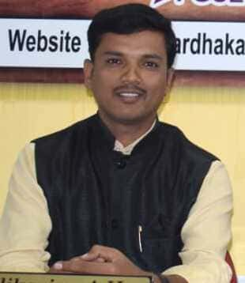

Nanja Naik D , President

Mohana Kumara M , Secretary

Spardha Karnataka Coaching Centre is an institution with a difference. It is one of the most prestigious and leading coaching centres of Karnataka. Our vision is to see the most dynamic, dedicated, disciplined civil servants to serve the nation. Our main branch is located at Shivamogga. Spardha Karnataka Coaching Centre has comprised committed, service minded, professional, resulted oriented faculties, University professors and academians of various walks of life, besides many successful IAS, KAS, KES officers are also rendering their honorary graceful service to convey their success path to script new history with upcoming aspirants of current generation.
Our Centre has been providing best-in-class service to the aspirants for over 3 years. Whitin the short span of time and stint many candidates got selected and discharging their duties sincerely in the higher echelons of Government sector services such as PSIs, PDOs and so on
Our Spardha Karnataka Coaching Centre is having state-of-the-art infrastructure and smart digital classes. We provide quality study materials of world renewed publishers and authors which will help all competitors of various examinations.
 Online-Offline daily exams.
Online-Offline daily exams.
group discussions to be conducted round the clock.
Internet amenities.
Library and Lab facilites are our boosting points to strengthening the wings of our success.
~Swami Vivekananda
Our Organization has bagged the state’s top PC Wireless post 2018.
Detailed information on the various posts and notifications of the Central and State Government has been providing to the aspirants.
We have been imparting a result oriented teaching from resource persons besides well ventilated classrooms and library amenities are available.
The Subject wise questions papers to be provided(free of cost).
High quality notes to be provided based on the subjective curriculum.
Model tests for various jobs to be conducted.(Every Week).
Banking Online Mock Tests (Daily).
E-Library facilities are available.
We are conducting Personality Development Classes and also Group Discussion.
Separate hostel facility is available for men and women